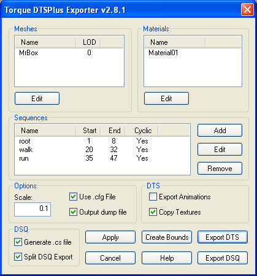
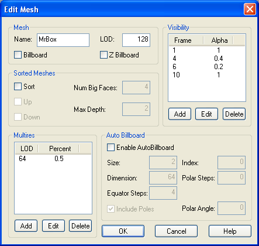
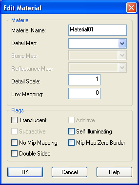
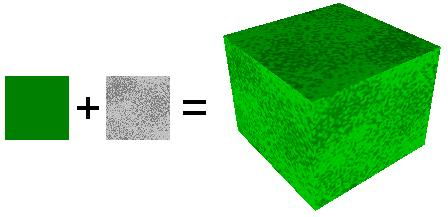
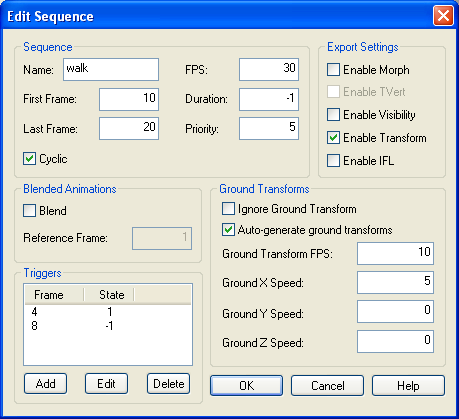

IntroductionMilkShape is a 3D modelling program from chUmbaLum sOft oriented towards building art for games. MilkShape can be used to build 3D shapes for the Torque Game Engine. MilkShape is shareware and a free 30 day trial is available. It can be registered for $20. The exporter ms2dtsExporterPlus.dll is an extension to MilkShape which allows it to export the DTS files used by the Torque Game Engine. Note that you must have at least Milkshape version 1.8.3 installed to use this exporter. To use the exporter, just copy ms2dtsExporterPlus.dll to your Milkshape install directory. The next time you start Milkshape, it will appear under the export list as "Torque DTS Plus...". You should also copy the ms2dtsplus.chm help file to the Milkshape install directory to allow access to the documentation directly from the exporter dialogs. The new exporter can co-exist with the old exporter (ms2dtsExporter.dll). It should operate similarly to the original, and most models can be exported with very few changes. You can now view and edit meshes, materials and sequences before you export them. Changes will be applied to the model unless you hit Cancel. This exporter is not yet completed. Some features are still missing, and it is possible that there are problems with those features that are implemented. If you find an error, you can help the development of this tool by providing a description of the problem, and if possible, the .ms3d, .dts, and dump.html files involved. Some features are listed as UNTESTED, these may or may not be 100% functional. The latest version of the exporter can always be downloaded here. ContentsCreditsThis exporter would not be where it is now without the following people who have been invaluable in its development. Thanks for all of your bug reports, testing and enthusiastic support!
Main DialogThe main exporter dialog box appears when you select the "Torque DTS Plus..." exporter from the File->Export list. All meshes, materials and animation sequences that are to be exported are listed here, and many of the properties of each can be modified before exporting. To edit a mesh, material, or sequence, select the object by clicking the name in the first column of the list. Then press the Edit button to open the relevant edit dialog. Any changes made while the main dialog box is open are applied to the model unless you select Cancel. The Milkshape SDK does not support shared vertices between mesh groups, so after exporting, seams may appear in the milkshape model that are not present in the exported model. This is easily resolved by selecting the vertices and rewelding. 
MeshesMost properties of a mesh can be edited using the Mesh Edit dialog box shown below. 
Level of DetailDetail levels indicate to the exporter what mesh is to be drawn at a given distance. The number corresponds to the pixel size in the game engine at which the mesh will be rendered. This is done by naming different detail levels of the same mesh with the same base name but a different trailing number. e.g. If you have meshes named 'head2' and 'head36', then when the size is 36 or greater the head36 mesh would be drawn. When the size is between 2 and 36 head2 would be drawn, and when the size was less than 2 nothing would draw. Pixel sizes are inversely proportional to the distance an object is from the camera, so a larger value (like 36) indicates the object is much closer to the camera than a smaller value (like 2). The original Milkshape exporter output shapes with all visible meshes at detail level 0 (ie render the same mesh no matter how far away it is from the camera). If you are not making use of LOD, this is the best value to give to visible meshes. Note: The exporter treats a trailing underscore character ('_') as a minus sign ('-'). Because of this, an underscore at the end of a mesh name will negate the detail level. e.g. a mesh named MyMesh_2 will be renamed to MyMesh with detail level -2. Underscores in the middle of the name are not affected. e.g.,. My_Mesh2 denotes a mesh called My_Mesh with detail level 2. BillboardsYou make an object a billboard by ticking the Billboard or Z Billboard check boxes in the Edit Mesh dialog box. Note that not all detail levels of the object need to be billboard objects, so the highest detail level of a shape could be a complicated 3d shape, whereas the lowest detail could just be a billboard. Note: These objects tend to have strange sorting properties if translucent materials are used. The center of rotation for the billboard object is the position of the joint that the object is attached to. To attach the billboard object to a different joint, just assign all of the mesh vertices to that joint. If the billboard mesh vertices are not attached to any joint, they will be automatically assigned to the 'root' joint (which is placed at the origin during export if it does not already exist). The bb_test.ms3d example demonstrates this feature. Sorted MeshesObjects with translucent textures often times appear to sort improperly in the engine. On modern graphics hardware, drawing on the screen amounts to storing values on the graphics card for the red, green, and blue channel, and also storing values for the distance of the fragment from the camera. The later value is often referred to as the "depth-value" or "z-value". The depth value is important for determining what should be drawn in front of what. To understand how this works, you have to understand one basic point: polygons are always drawn in an order. One is drawn first, another second, etc. So when the second is being drawn, the value of the first polygon is sitting in the frame buffer (the place on the graphics card that holds what you are drawing on the screen). This means that the graphics hardware can simply compare the depth value of the incoming pixel against the depth value of the stored pixel, and only update the frame buffer if the incoming pixel is in front of the stored pixel. That is exactly what happens. Drawing translucent fragments also requires a combination of what is in the frame buffer already and the incoming fragment. With translucency, the incoming fragment has an "alpha-value" in addition to red, green, and blue, and the alpha value is used to blend the fragment with the framebuffer. An alpha of 1 means to over-write what's in the buffer, an alpha of 0 means not to touch the frame buffer, and an alpha of 0.5 means to mix them equally. Translucent drawing with depth tests gets very tricky. If polygons are drawn back to front, depth tests and translucency behave well together. But when some polygons in the front are drawn first, things start to get very messy. Imagine what would happen if you had a fully translucent texture (alpha of 0) drawn first, and that it fully covered the camera and was in front of everything else. Since the alpha value is zero everywhere, it would not draw to the RGB channels. But the depth value would still be updated for the entire screen. Now everything that was drawn would fail the depth test. The result is that you would see a blank screen no matter what you draw behind the phantom polygon. Because of this issue, translucent polygons are normally drawn with special care: the depth value is not saved but the depth test is still used. Translucent polygons are drawn after non-translucent polygons, and translucent polygons are drawn from back to front. The result is that translucent polygons behave when they overlap each other because they are drawn back to front. Translucent polygons behave when overlapping non-translucent polygons because they only drawn when they are in front of the non-translucent polygons (remember, the depth test is still carried out, the depth value just isn't stored). The phantom polygon issue is avoided because the depth value isn't stored. One consequence of all this is that any object that draws translucent polygons must do so with special care. Furthermore, the engine itself must take special care to draw everything in the right order. In particular, the most accurate way for the game to draw the scene is to first draw the non-translucent polygons of all objects, then draw the translucent polygons of each object from furthest to closest to the camera. Each object, then, is only responsible for drawing it's own polygons so that they can sort amongst themselves. Three space has several mechanisms built in to handle the sorting of polygons. First, parts with only non-translucent polygons are drawn first, then parts with a mixture of translucent and non-translucent polygons, and then translucent parts. Note that if you have several parts with mixed polygon types, you will likely get some inappropriate sorting, so don't do this. These are all the measures 3space takes by default. However, there are special objects that do a little more sorting on their own. These are the sort objects described below. What these objects do is order the polygons so that they will always draw back to front. Believe it or not, it is often possible to do this for all camera angles. This however, it is not always possible. In those cases, the object has different orderings for different angles (usually only a few are needed) and in really bad cases, polygons have to be split. The latter can sometimes lead to large file size. If you see this happening, you should redesign the shape. The faces of these objects are presorted so that faces are drawn from back to front. This is used to force the sorting order of translucent objects (which are not z-buffered) This sometimes involves splitting faces and sometimes involves different orders depending on where the camera is. To make an object a sort object, tick the Sort checkbox in the Edit Mesh dialog box. Other detail levels of this object do not have to be sort objects. You can also give the exporter some hints on how to create the sort objects. You supply these hints by editing the sort fields in the Edit Mesh dialog. The fields are:
VisibilityVisibility keyframes can be defined to control the 'alpha' value of a mesh when it is rendered. Frames between keyframes are interpolated, frames outside the keyframe range are clipped to the keyframe range. Visibility ranges from 0 (invisible) to 1 (fully opaque). A sequence must have Enable Visibility set to use a meshes visibility channel. Note: Only rigid meshes (ie meshes attached to a single bone) can have their visibility animated. Collision MeshesAny mesh whose name begins with 'Collision' will be used ingame as a collision mesh. Collision meshes are normally given a negative detail level from -1 to -8 so that they are not drawn, but you can make the collision mesh visible by giving it a positive detail level. Collision meshes should use as few polygons as possible, and must be convex. The more polygons contained in the collision mesh, the greater the CPU load in determining collisions with other objects. LOS Collision MeshesAny mesh whose name begins with 'LOSCol' will be used as a line of sight collision mesh. These meshes are used for line of sight collision tests such as checking if a bullet will hit the model. These meshes are normally given a negative detail level from -9 to -16 so that they are not drawn. You can view the LOS collision mesh ingame by giving it a positive detail level. Like regular collision meshes, LOS meshes should use as few polygons as possible, and must be convex. Multires (auto-detail meshes)The exporter may be configured to automatically generate lower-detail meshes as part of the export process. The two fields of interest for each multires level is the LOD and the Percentage. The LOD field determines the size at which the multires-mesh will be displayed (just like normal geometry), and the Percentage determines the desired reduction in polygons from the original mesh. For example, adding a multires of LOD=32 and Percentage=0.5 would generate a mesh with half the number of polygons that is displayed when the shape is 32 pixels or larger on screen. MaterialsMost properties of a material can be edited using the Material Edit dialog box shown below. 
Detail MappingDetail maps allow you to blend two textures together as shown below:
The detail material is scaled by the detail scale setting before being blended with the base material. The easiest method is to make the detail texture the same size as the base texture, and set detail scale to 1.
You can find an example of a shape using detail mapping in the examples folder.
Note: The detail material is stored as the milkshape material index, so if you delete materials, you may need to set the name again. IFL MaterialsAn IFL file is a text file that describes which texture to use at each frame for a DTS shape. Animation sequences can be defined that use this information to switch textures automatically while the animation is playing. IFL materials are defined in milkshape by specifying a texture with a special name in the texture field of the material. The name of the texture is the same as the IFL text file, except it has _ifl appended. e.g.,. An IFL file, player.ifl, is shown below: texture1 2 texture2 3 texture3 1 texture4 6 Each line describes the texture to use, and the duration (in frames) to display it. To use the IFL material in milkshape, a copy of the first image (texture1) is made and renamed to player_ifl. This new texture is used for uv mapping, and tells the exporter the name of the IFL file to use. It is only required during export, and is not actually used by the DTS shape. A sequence must have the EnableIFL flag set to make use of an IFL material. You can find an example of a shape using an IFL material in the examples folder. Note: IFL animations are not affected by the frame rate of the sequence in which they are played. The durations specified in the file are assumed to be at a frame rate of 30 fps. AnimationMilkShape only provides a single animation timeline, but the Torque Engine supports multiple animation sequences, each of which can be named and have different properties. Multiple sequences in MilkShape are animated on the main timeline and are split into separate sequences by the exporter. For this to happen, animation sequences must be declared indicating where each sequence starts and ends on the master timeline. This is done through materials with special names (a '*' at the start of a material name indicates that it is a sequence description). The easiest way to define sequences is using the export dialog box: 
Ground TransformsGround transforms are generated by animating the bounding box. To generate ground transforms for a walking animation, you would animate the character walking forward (not in-place!), and animate the bounding box to move forward along with the player. The DTS exporter stores the node transforms relative to the bounding box transform (so the character will walk in-place in the ShowTool), and determines the natural ground speed of the character by examining how far the bounding box moves throughout the sequence. The bounding box is simply a mesh with the name 'Bounds'. It is normally attached to the Root bone. You can use the main export dialog to create the bounds mesh for you automatically. The exporter can also generate (constant speed) ground transforms automatically without having to manually animate the bounding box. Texture AnimationsThis is useful for things where the texture itself must animate. Scrolling computer monitors, waterfalls, and tank treads are just a few of the applications for animated texture coordinates. Note: Texture animation is not yet supported by this exporter. Non-smooth texture animation can be faked using IFL materials. See IFL Materials for details. Visibility ChannelA mesh can define a visibility channel (see Meshes). Sequences that have the enableVis flag set can use this set of keyframes to control the transparency of the mesh during the sequence. This is useful for parts of the model that you may only wish to show during certain animations. TriggersTriggers can be added to and removed from a sequence by using the Add and Remove buttons in the Edit Sequence dialog. You may define up to 30 independent trigger states per sequence. TriggerFrame is the frame number on which a trigger event occurs. TriggerState defines the state of a trigger. There is one triggerFrame and triggerState per trigger. Trigger numbering starts at 0. For example, triggerFrame0 and triggerState0 are the first trigger, triggerFrame1 and triggerState1 are the second trigger, etc. Note that when you delete triggers from the list, all of the remaining triggers are renumbered starting from 0. Their frame and state attributes are retained. Any sequence that makes use of triggers must have the ignoreGround checkbox cleared, or the triggers will not work ingame. DSQ ExportExporting animations to a DSQ file allows you to share animations with multiple DTS shapes. DSQ files are loaded at runtime via script. e.g.
singleton TSShapeConstructor(PlayerDts)
{
baseShape = "./player.dts";
sequence0 = "./player_root.dsq root";
sequence1 = "./player_forward.dsq run";
sequence2 = "./player_back.dsq back";
}
The 'run' sequence can now be played as if it were part of the original DTS shape. A DSQ file may contain more than one animation, and is accessed like this:
singleton TSShapeConstructor(PlayerDts)
{
baseShape = "./player.dts";
sequence0 = "./player_anim.dsq root";
sequence1 = "./player_anim.dsq run";
sequence2 = "./player_anim.dsq back";
}
For a DSQ file to be compatible with a DTS shape, all nodes that they have in common must be in exactly the same base position and rotation. Only animated nodes need to be exported to the DSQ file. Note: Milkshape normalises all bone rotations. This can be seen by opening the 'Mr Box' example file, then rotating any bone. You will notice that all of the bones change their rotation. This is a milkshape issue, and has nothing to do with the exporter. The result of this normalisation process is that animations produced by milkshape may not be compatible with the default Orc player. DSQ files exported from milkshape should be compatible with DTS files exported from milkshape however. Bone WeightsThe exporter supports up to 4 bone weights per vertex to be exported. Using bone weighting is the best way to achieve more natual animations, and helps prevent the stretching and distortion of meshes around joints (such as elbows in a humanoid mesh). Milkshape originally supported only 1 bone weight per vertex, so a plugin is required to access the extra 4 weights. The only plugin currently available is the Sims2 UniMesh Bone Tool plugin (available under the Vertex menu) that is included with the Milkshape 1.7.8 install. Note that this plugin is not related to or required by this exporter - it merely provides a way to edit the 4 bone weights, which may then be exported to a DTS shape. Please refer to the documentation for the Sims2 UniMesh Bone Tool plugin for details on its use. By default (if no extra weights are set) shapes are still exported with only 1 weight per vertex. Comment StringsVersions of milkshape before 1.7.4 did not provide any means of storing additional user information in the model. The original ms2dtsExporter stored a small number of properties in the name of the mesh or material. e.g.,. seq:walk=1-4,cyclic. Previous versions of ms2dtsExporterPlus continued this practice, although because there were far more properties to store, they were packed into a binary form, resulting in names that looked like this: *Walk=@!]!!!?&!b!!. All user properties are now stored in the comment string of the model, mesh and material objects. There are 3 types of properties, floating point, integer and boolean (true/false). Each group stores the number of properties in that group, then a list of name=value pairs, each on a new line. e.g.,. The comment string of an animation sequence may look like this: 1 frameRate=30 4 endFrame=4 startFrame=1 numTriggers=1 triggerFrame0=1 triggerState0=-1 1 cyclic=1 Comment strings can be edited manually, but very little validation is performed when they are read by the exporter, so manual editing should be avoided. The export dialog boxes provide a much better way to edit object properties. Additional InformationShape StructureMany 3D modelling programs support some kind of tree structure that controls the hierarchy of various elements within the shape. Unfortunately, Milkshape does not support a node hierarchy so the exporter attempts to fit the Milkshape model to the following structure: ROOT | |-start01 | | | |-LOD Markers | |-base01 | | | |-skeleton (including Root bone) | | | |-rigid meshes | |-skinned meshes |-animation sequences |-bounds mesh
You can check the structure of the exported shape by looking at the dump file. Note: The bounds mesh and root bone are automatically created by the exporter if they do not already exist in the model. After the export process, they are automatically removed so the model remains unchanged. The bounds mesh and root bone can be retained by selecting 'Create Bounds Mesh' from the export dialog, then exporting or pressing 'Apply'. Default ConfigurationThe exporter supports configuration files. If a configuration file is not found, the following default configuration is used: +Error::AllowUnusedMeshes -Materials::NoMipMap -Materials::NoMipMapTranslucent +Materials::ZapBorder +Param::SequenceExport -Param::CollapseTransforms =Params::AnimationDelta 0.0001 =Params::SkinWeightThreshhold 0.001 =Params::SameVertTOL 0.00005 =Params::SameTVertTOL 0.00005 =Params::weightsPerVertex 1 +Dump::NodeCollection +Dump::ShapeConstruction +Dump::NodeCulling +Dump::NodeStates +Dump::NodeStateDetails +Dump::ObjectStates +Dump::ObjectStateDetails +Dump::ObjectOffsets +Dump::SequenceDetails +Dump::ShapeHierarchy NeverExport start01 base01 A '+' sets the setting to true, '-' sets it to false, and '=' is used to set the value of a setting. Nodes in the 'NeverExport' list are not written to the DTS file. This list is mostly used for DSQ export to exclude non-animating nodes. Names in the NeverExport list can include wildcards (*). e.g., 'leg*' matches both 'leg1' and 'leg2'.
Dump FilesWhen the shape is exported, an HTML file called dump.html may be created in the same directory as the dts file. This file contains details of the export process, as well as the final structure of the exported shape, and may be opened in any text editor or web browser. It may be useful to track down problems with the shape or the export process. Change LogVersion 2.8.4 - 14/06/11
Version 2.8.3 - 23/07/09
Version 2.8.2 - 25/11/08
Version 2.8.1 - 14/11/08
Version 2.8.0 - 06/11/08
Version 2.7.3 - 30/01/07
Version 2.7.2 - 04/12/06
Version 2.7.1 - 29/11/06
Version 2.7.0 - 09/11/06
Version 2.6.2 - 07/11/06
Version 2.6.1 - 18/06/06
Version 2.6.0 - 10/06/06
Version 2.5.0 - 24/12/05
Version 2.4.0 - 17/12/05
Version 2.3.0 - 03/10/05
Version 2.2.0 - 02/05/05
Version 2.1.0 - 01/05/05
Version 2.0.0 - 17/04/05
Version 1.9.0 - 23/01/05
Version 1.8.0 - 16/11/04
Version 1.7.0 - 27/10/04
Version 1.6.0 - 23/09/04
Version 1.5.0 - 31/08/04
Version 1.4.0 - 24/07/04
Version 1.3.0 - 21/07/04
Version 1.2.0 - 30/06/04
Version 1.1.0 - 22/06/04
Version 1.0.0 - 19/06/04
|